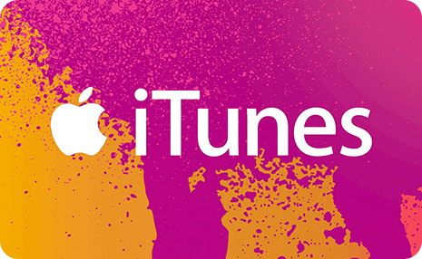
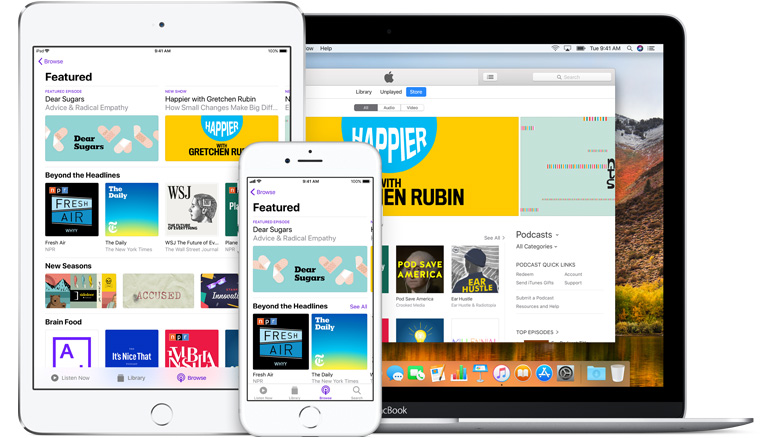

| Stream over 50 million songs, ad-free. Or download albums and tracks to listen to offline. All the music in your personal iTunes library — no matter where it came from — lives right alongside the Apple Music catalog. Start your free three-month trial with no commitment, and cancel anytime. | |
|  | Give friends and family an App Store & iTunes Gift Card and they can choose anything from the App Store, the iTunes Store, and Apple Books, or put it toward Apple Music subscriptions and iCloud storage plans. |
|  | The iTunes Store is available on all your devices, which means you can buy that catchy song you just heard or rent that movie you’ve been meaning to see, anytime you want. And since your entire library of music, movies, and TV shows lives in iCloud, everything you buy is immediately available, no matter how you want to play it. |
| iTunes is the best way to organize and enjoy the music, movies, and TV shows you already have — and shop for the ones you want. Enjoy all the entertainment iTunes has to offer on your Mac and PC. Your music, movies, and TV shows take center stage. |
|